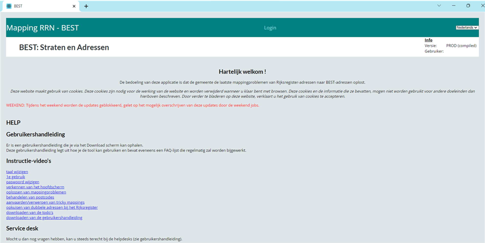

My portfolio.
The Municipality Tool


With this application the municipalities in Belgium will be able to fix mapping issues that occur when migrating from their own non standardized address data to new standard BEST addresses.

The following techniques were used:
A visual impression:

The code can be found at a (private) link.
© 2023 Marc Bruyland.